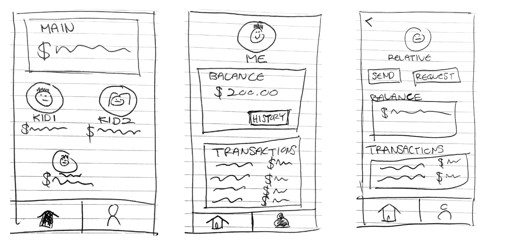
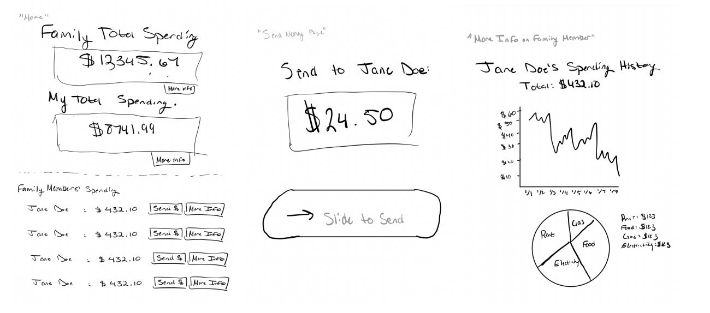
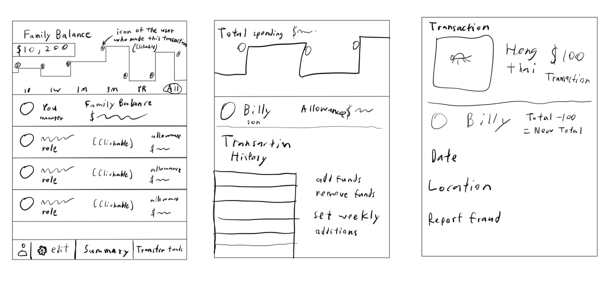
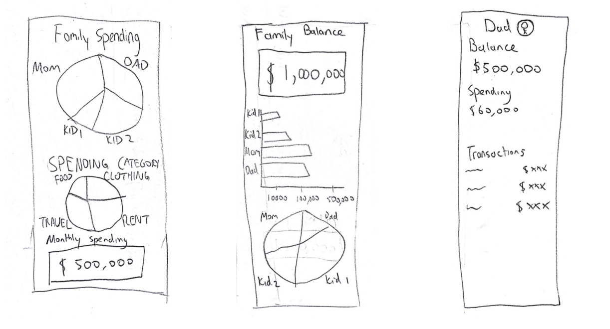
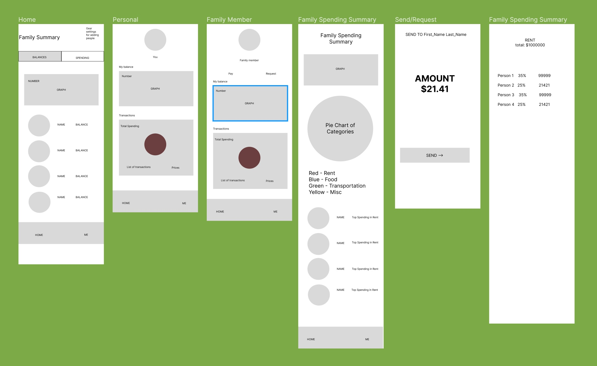
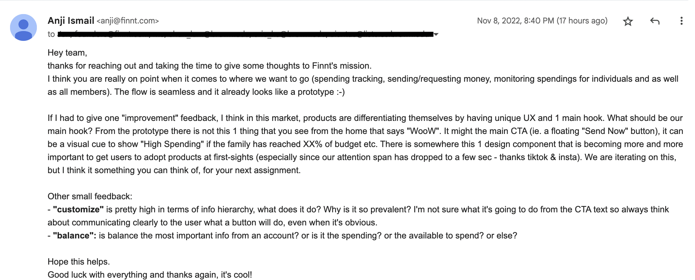

Iterative Design
Overview
This project was for CSCI1300: User Interface and User Interaction focusing on going through the full process of mocking up a solution to a startup's concept. We iteratively designed an interactive interface for an emerging startup: Finnt. There are four parts to the iterative design process flow: (1) sketching ideas of the interface, (2) creating an interactive, high-fidelity prototype, (3) conducting user testing on a final, revised prototype, and (4) contacting the start-up.
Part 1: Sketching & Wireframing
Pre-Design Thinking
Finnt is a mobile banking app for families. By allowing family members to create sub-accounts under a main
account, Finnt makes financial management easy. Finnt is designed for families who want to track the
spending of their kids, send money to relatives overseas, and save together.
Families would be
impacted
by this interface because currently many families share the problem of tracking the spending of their family
members, paying hefty fees to send money internationally, and finding ways to save.
Sketching
We brainstormed 4 different possible designs for Finnt’s app. Each design includes 3 different screens that show the key functionalities of the app.
Sketch 1
Sketch 2
Sketch 3
Sketch 4
Combining Ideas into a Wireframe
After brainstorming, our group discussed whether the sketches we created demonstrate a diverse set of creative solutions to Finnt’s goals. After this conversation, we created a set of wireframes in Figma.
Some of the design choices that led to this wireframe were:
- Creating the interface from the perspective of a parent with complete access
- Having two main pages: the user’s profile and family information
- Enabling the user to see the purchase history of other family members
- Making money transfer seamless and easy
- Using a pie chart to provide clear ways to save
Part 2: Mockups
Interactive High Fidelity Mockup
Based on the wireframe we created in Part 1, we made an interactive high-fidelity prototype using Figma. Below is the embedded wireframe.
Some of the design choices that led to this high fidelity prototype were:
Interaction
- Interaction language for buttons: Verb or Verb + Noun (e.g. Customize, Report Fraud, Send or Request)
- Icons are consistent among pages. “Actions are hard to icon-ize” so we set our icons based on metaphors and objects rather than actions (e.g. home = homepage, person = profile, plus = add). Geometry based icons were used instead of hand-drawn ones
- Memorability, efficiency, learnability: easy to recognize buttons and icons
Navigation
- Pages are grouped by topic to make webpage flow intuitive and reduce mental workload (personal spending, personal balance, family balance, family spending, etc.)
- Deliberate and consistent navigation styles for users to learn
- The navigation flow is top-down. Users start from family spending/balance, then individual spending/balance, then go down to each specific transaction
Hierarchy
- Interface is a hierarchy as seen by top-down navigation flow (users start from family spending/balance then go down to individual spending/balance then to each specific transaction)
- Navigation bar at the top and bottom indicates which level of hierarchy they are on (balance or spending) and (family or self)
Mockup Crit in Studio
We introduced our startup and prototype to our classmates, who then interacted with our prototype and
provided us with feedback. We updated our prototype to address the critiques we received.
Here is a
list of the critiques we received and an explanation for how we addressed them.
Part 3: User Testing
Using our interactive hi-fi prototype, we conducted usability testing through UserTesting.com, a user testing service.
Determine a Task
We gave users the following tasks which capture the primary functions of the app (sending money, viewing transactions, analyzing transaction categories):
Overarching Task: Send $121.41 to your son, Jaden
- Step 1: Start on home by clicking the home icon in the bottom navigation bar
- Step 2: Click on Jaden’s profile
- Step 3: Click on the Request/Send button
- Step 4: Send Amount
- Step 5: Enter Pin
Sub Task 1: View the transaction labeled “Chipotle” under Jaden
- Step 1: Start on home by clicking the home icon in the bottom navigation bar
- Step 2: Click on Jaden’s profile
- Step 3: Click on spending in the top navigation bar
- Step 4: Scroll down and click on the Chipotle transaction arrow under “Recent Purchases”
Sub Task 2: Find out what the top category in monthly family spending is
- Step 1: Start on home by clicking the home icon in the bottom navigation bar
- Step 2: Click on “Spending” in the top navigation bar
- Step 3: Look at the pie chart labeled under “Monthly Family Spending”
Testing Instructions & UserTesting.com
On UserTesting.com, we provided testing instructions and post-test questions to collect information from three users.
Testing Instructions
Finnt is a mobile banking app for families. By allowing family members to create sub-accounts under a main account, Finnt makes financial management easy. Finnt is designed for families who want to track the spending of their kids, send money to relatives overseas, and save together. Users should be in a relaxed state of mind when performing the experiment. In this experiment, you are Will Smith (head of your Finnt family). The objective of this experiment is to send money ($121.41) to your son (Jaden), to see Jaden's transaction labeled as Chipotle, and to find out what the top category in family monthly spending is. This is not an actual website but an interactive mockup made on Figma, a prototyping software.
Post-test Questions
- What frustrated you most about this site?
- Do you think this app could help families save money?
- Did navigating the app feel intuitive?
Links to all Three User Testing Videos
Analysis of Results
Generally, all 3 tasks were completed with ease and their behavior was in line with expectations. All tasks were marked as “very easy” when users were asked to assess difficulty. Although there were some challenges users faced, all the users were able to overcome them in a relatively short amount of time.
Most of the users struggled with Task 2, which was finding Jaden’s Chipotle transaction. Users tried to find this transaction by either
- clicking “View All Transactions” under the “Balance” tab instead of “Recent Purchases” under the “Spending” tab
- clicking on the food category in the pie chart or the list of categories beneath it.
In the feedback, the users all found the app to be intuitive to navigate and use, appreciated the color scheme of the website, and how fleshed out our prototype was. A user also said that they really liked the PIN because it adds another layer of financial security. One user even said, “This app is very simple, easy and straightforward. I love the amount of detail.” With more time, we would rename the “View All Transactions” button to “Funds History” to clearly distinguish balance transactions from purchases. Additionally, we would make entire rows clickable instead of just the arrow icons. Finally, we would create a transactions page for each category.
Part 4: Contact the Startup
Finally, we emailed Finnt and shared the final version of our mockup with them. Below is their response.
Key Takeaways
From this project, we learned how to work together to design an interactive interface for an emerging startup. We learned the full process of mocking up a solution to a startup's concept in Figma and going through the steps of sketching, prototyping, and user testing.
Citations
- This was a group project.